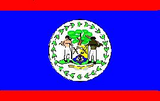
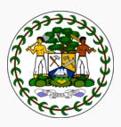

Belice
|  |  |
Información General
Nombre oficial: Belice
Área: 22 965 km²
Costas: 386 km
División política: 6 distritos
- Belice
- Cayo
- Corozal
- Orange Walk
- Stann Creek
- Toledo
Unidad monetaria: Dólar de Belice
1 Dólar de Belice = 100 centavos
Idiomas: Inglés (oficial), español, kekchí, mopán, yucateco, criollo y otros dialectos mayas
Fiesta nacional: 21 de septiembre, Día de la Independencia
Gentilicio: Beliceño
Hora oficial: GMT -6 horas (normal/verano)
Miembro de: ONU, Commonwealth, CARICOM, OEA
Curiosidades
Hasta junio de 1979, Belice fue llamada Honduras Británica.
Perfil
Ecónomico
Perfil Demográfico
Población: 270.000 hab.
Densidad de población: 11 hab/km²
Perfil Cultural
Alfabetismo: 80 %
Religión:
- Católicos: 70,0%
- Anglicanos: 11,2%
- Protestantes: 10,9%
- Religiones tribales: 2,5%
- Protestantes marginales: 1,5%
- Judíos: 1,2%
- Espiritistas: 1,1%
- Otros: 1,6%
Sistema de Gobierno
Constitución vigente: 21 de septiembre de 1981
Sistema ejecutivo: Monarca británico (Jefe de Estado constitucional, representado por el Gobernador General, que debe ser beliceño), Primer Ministro (líder del partido mayoritario nombrado por el gobernador general), gabinete, Consejo Asesor (asesora al Gobernador General).
Sistema legislativo: Cámara de Representantes (veintinueve miembros electos cada cinco años) y Senado (ocho miembros nombrados por el gobernador general, cinco por recomendación del primer ministro, dos por recomendación del líder de la oposición y uno por el Consejo Asesor).
Sistema judicial: Corte Suprema, Corte de Apelaciones y tribunales distritales para casos criminales y civiles.
Aproximación histórica
Situada en la costa centro-oeste de América Central, Belice limita al norte con México, al oeste con Guatemala, con el mar de las Antillas al este y con Honduras al sur.
Presenta regiones pantanosas del litoral al interior, con selva en el centro y montañas al oeste. El punto más elevado es el Pico Victoria con 1 122 m.
Hasta 1979 Belice fue conocida como Honduras Británicas. Muchas ruinas indican que estuvo habitada por la civilización maya. La colonización inglesa se inicia a principios del siglo XVII, reconocida como colonia británica en 1862, alcanzó su independencia en 1981 en que se convierte en estado soberano asociado a la Comunidad Británica. Las fronteras con Guatemala fueron delimitadas por el tratado de 1859, pero los litigios fronterizos con este país se extendieron hasta el siglo XX. Es en 1989 que Belice asume el compromiso de reducir su mar territorial, facilitando las negociaciones con Guatemala que reconoce en 1991 la soberanía de Belice.
La economía de Belice es fundamentalmente agrícola con cultivos de caña de azúcar, frutas cítricas, bananos, arroz y maíz. Las principales industrias son de procesamiento de productos primarios como algodón, textiles, aceites vegetales, azúcar y cemento.
«-- ir al comienzo
«-- regresar